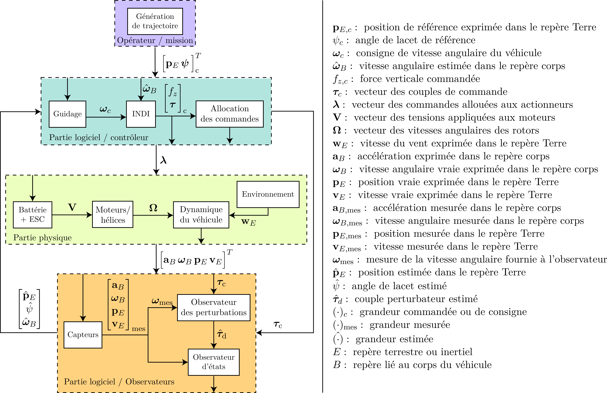
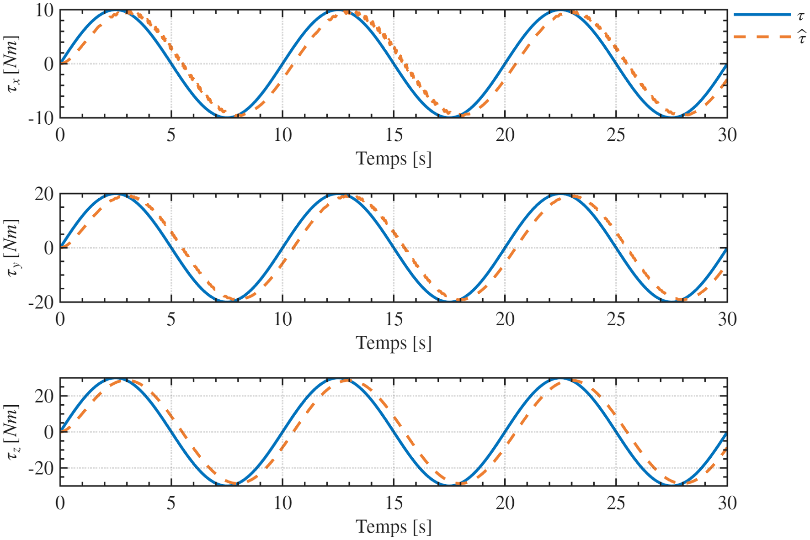

Simulateur haute fidélité d'un hexacoptère industriel
Un environnement de simulation non linéaire à haute fidélité permettant d'évaluer la stabilité, la précision et la robustesse de la chaîne GNC face aux perturbations atmosphériques, aux incertitudes du modèle et aux imperfections de mesure.

La boucle est parcourue dans un seul sens : le générateur de trajectoire produit une consigne NED + cap, le guidage la convertit en consignes de vitesses de rotation, l'INDI calcule la force collective et les couples, l'allocation les répartit sur six rotors, la chaîne batterie–ESC–moteur–hélice produit forces et couples réels, la dynamique 6 DDL intègre le mouvement dans une atmosphère et un vent modélisés, les capteurs imparfaits l'observent, et l'estimation (EKF + observateurs de perturbation) referme la boucle. Chaque bloc est une responsabilité séparée : le contrôleur ne voit que l'état estimé, jamais l'état vrai.
{{ p.title }}
{{ p.text }}
- / {{ pt }}
Les paramètres du véhicule ne sont pas des valeurs plausibles choisies pour faire tourner un modèle : ils proviennent d'une identification menée sur un DJI Matrice 600 Pro réel, à partir de données de vol, et publiée par Bauer et Nagy. Géométrie, disposition et sens de rotation des six rotors, masse et inertie en configuration TB48S, coefficients de force de moyeu et de traînée aérodynamique — chacun est repris de cet article avec sa référence d'équation ou de tableau, et conserve dans le code son unité, sa source et son statut.
P. Bauer et M. Nagy, « Flight-Data-Based High-Fidelity System Identification of DJI M600 Pro Hexacopter », Aerospace, MDPI, vol. 11, n° 1, p. 79, janvier 2024. Complété par les spécifications publiques DJI et, pour les moments d'inertie, par Setati et al. (2022).

FIG. 03 est un essai de qualification isolé de l'observateur : trois couples sinusoïdaux d'amplitudes 10, 20 et 30 N·m et de période 10 s sont injectés sur les axes de roulis, tangage et lacet. L'estimé reconstruit l'amplitude sur les trois axes et suit la consigne avec un léger retard de phase, cohérent avec la bande passante retenue pour l'observateur. Cet essai borne ce que l'observateur sait faire sur une perturbation lente et déterministe — ce qu'il donne en vol, sur une perturbation large bande, est rapporté plus bas (FIG. 06).
La validation est réalisée sur une trajectoire 3D agressive, conçue pour solliciter simultanément le suivi de position, le contrôle d'attitude, l'allocation de commande, la propulsion et l'estimation d'état. La manœuvre combine déplacement horizontal courbe, montée continue et rotation soutenue du cap, sous l'action d'un vent non stationnaire comprenant cisaillement et rafale. Toutes les figures et métriques présentées ci-dessous correspondent à ce même scénario.
Campagne HiFi_INDI — 05-08-2026. Résultats intermédiaires : la campagne de validation est en cours et les valeurs ci-dessous correspondent à une réalisation unique (une seule graine aléatoire), non à une statistique Monte-Carlo.
La décision PASS/FAIL est prononcée sur les cinq dernières secondes de vol, une fois la trajectoire de référence stabilisée. Les seuils sont des exigences de projet, traçables mais non universelles : ils s'inspirent des mesures définies par l'ASTM F3609-25 sans constituer une déclaration de conformité.
Les huit critères évalués sur cette campagne sont satisfaits. Les marges sont confortables en position horizontale (0,22 m pour une limite de 1 m), en vitesse de rotation (0,61 °/s pour 5 °/s) et sur l'usage des actionneurs, aucun rotor ne s'approchant de sa butée de régime. L'axe vertical est le plus tendu, à 0,62 m pour la même limite de 1 m : c'est là que porte l'effort d'amélioration.
Le contrôleur ne dispose jamais de l'état vrai : il travaille sur la sortie de l'EKF. Comme le simulateur, lui, connaît l'état vrai, l'écart entre les deux est directement mesurable — ce qui est l'intérêt principal d'une plateforme de ce type. Valeurs RMS calculées après extinction du transitoire initial (t ≥ 2 s).
L'écart d'estimation de cap est nettement supérieur à celui de roulis et de tangage — comportement attendu, l'assiette étant contrainte par le vecteur gravité alors que le cap ne l'est que par la dynamique et le GNSS. Réduire cet écart est le prochain point d'amélioration de l'EKF.
« Haute fidélité » qualifie l'objectif du projet et le niveau de détail des modèles. Cela ne vaut ni validation en vol, ni conformité réglementaire, ni certification. Les phénomènes suivants ne sont pas représentés et ne doivent pas être supposés couverts par les résultats ci-dessus.